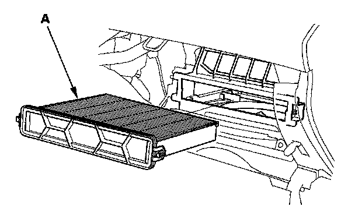
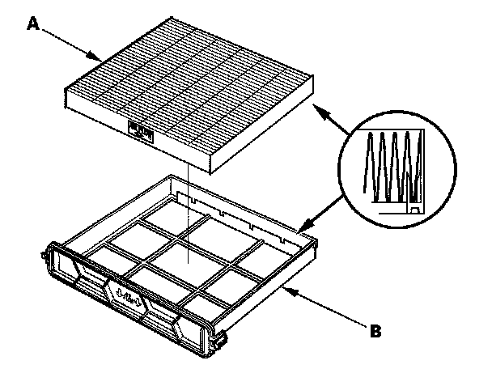

Cabin Air Filter / Purifier: Service and Repair
Dust and Pollen Filter Replacement1. Open the glove box. Remove the glove box stop on right side, then let the glove box hang down.

2. Remove the dust and pollen filter assembly (A) from the evaporator.

3. Remove the filter (A) from the housing (B), and replace the filter.
4. Install the filter in the reverse order of removal. Make sure that there is no air leaking out of the blower unit.